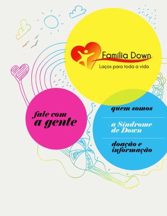

|  | ||||
Letícia Lima Leão Médica Pediatra e Geneticista O que é síndrome de Down? É um conjunto de características que são observadas em pessoas que apresentam uma alteração genética específica que é a presença de uma cópia extra de parte ou de todo cromossomo 21. Existem, dentro de nossas células, estruturas que contêm o DNA e que são chamadas de cromossomos. Essas estruturas carregam a informação genética que passa dos pais para os filhos e que determina todas as funções do corpo, além da nossa aparência. Em cada célula do nosso organismo existem 23 pares desses cromossomos que diferem entre si e são representados por números, de acordo com seu tamanho e forma. A síndrome de Down (SD) ocorre quando existem três cromossomos do tipo 21, ao invés de dois, como seria o habitual. Por que ocorre essa alteração genética? A principal finalidade do cariótipo é identificar se a síndrome foi causada por um acidente genético, ou se existem outras razões para a presença de um cromossomo 21 a mais. Embora sejam mais raras (cerca de 3% das vezes), podem ser observadas trocas entre pedaços dos cromossomos como causa da SD. Nesse caso, há necessidade de avaliação mais criteriosa da família para identificar se existe aumento da chance de recorrência da SD em futuras gestações do casal. A realização do cariótipo, muitas vezes, também é importante para que os pais se sintam mais seguros em relação ao diagnóstico e tenham maior clareza da causa. É possível fazer o diagnóstico antes de o bebê nascer ? Sim, mas nem sempre. Os exames de ultrassom (translucência nucal e morfológico) podem mostrar alterações que levem a suspeita da SD. Em cerca de 30% dos casos, todos os exames de rotina no pré-natal são normais e o diagnóstico só é realizado após o nascimento. O que fazer quando o diagnóstico é definido? Em primeiro lugar, é importante lembrar que todas as pessoas sentem-se muito assustadas quando são informadas de que seu filho apresenta qualquer alteração genética. Ocorrem diversos sentimentos ao mesmo tempo e é difícil lidar com todos eles. É preciso deixar que as emoções apareçam e não sentir culpa quando reações inesperadas ocorreram. É preciso ter paciência, porque esse processo demora um pouco para se resolver. Acompanhe com a equipe médica o tratamento, certificando-se das condições de saúde da criança e procure informar-se o máximo possível sobre as características da síndrome e sobre as medidas a serem tomadas para garantir a boa saúde e a qualidade de vida do seu filho. Não há como definir, ao nascimento, como será exatamente aquele bebê quando se tornar adulto, mas, considerando o conhecimento atual, quando recebe a estimulação adequada desde a infância, a maior parte das pessoas com SD é capaz de tornar-se independente e de realizar grande parte das funções exercidas por pessoas que não têm a síndrome. Existem graus diferentes da SD? Não existem classificações considerando graus que poderiam ser atribuídos às limitações ou facilidades. Frequentemente cria-se certa confusão por haver uma crença de que existe a SD leve, moderada ou grave. Na verdade, as pessoas com SD são diferentes umas das outras, como qualquer ser humano é diferente na sua individualidade. Diversos fatores podem melhorar ou prejudicar a evolução de uma pessoa com SD, além das diferenças existentes no potencial de cada uma. As crianças com SD apresentam problemas de saúde? Nem todas, porém alguns problemas de saúde são mais frequentes em pessoas com síndrome de Down. Os mais importantes, seja pela frequência, ou pelas consequências que podem gerar são: as malformações cardíacas; malformações do sistema digestivo (estômago e intestino); o hipotireoidismo (diminuição do funcionamento da glândula tireoide); problemas de visão e de audição; convulsões; diabetes; alterações das articulações e da coluna; deficiência na imunidade (defesas do organismo contra infecções) e problemas de pele Por isso, o acompanhamento médico deve ser feito por profissional que tenha bons conhecimentos sobre a evolução da SD. Existe cura para a SD? Existe tratamento para a SD? Até o momento, não há cura, embora existam tratamentos a serem feitos. O uso de medicamentos e de tratamentos inovadores, ou milagrosos para se obter a cura deve ser desestimulado. Essas tentativas levam a frustrações, gastos financeiros e, principalmente, podem ser prejudiciais à criança. O tratamento mais recomendado consiste na estimulação especializada por profissionais como fisioterapeutas, fonoaudiólogos, terapeutas ocupacionais, psicólogos e psicopedagogos. Deve ser iniciado nos primeiros meses de vida (é chamado de “intervenção precoce”) e tem por objetivo obter o melhor desenvolvimento do potencial de cada pessoa com SD. Existe alguma recomendação alimentar específica para pessoas com SD? Não. As orientações alimentares durante a infância são, em geral, as recomendáveis para todas as crianças. O aleitamento materno deve ser sempre incentivado. Além dos inúmeros benefícios reconhecidos, o exercício da musculatura facial, proporcionado pela sucção ao seio, é muito útil para os bebês com SD em etapa posterior da alimentação, quando são introduzidos os alimentos sólidos e também no desenvolvimento da fala. Pode ocorrer tendência a ter constipação intestinal (intestino “preso”) e, por isso, a alimentação deve conter maior quantidade de fibras. Para a prevenção da obesidade, os alimentos industrializados devem ser evitados e o hábito de comer doces, frituras, chocolate, refrigerantes e biscoitos deve ser desestimulado. Existe um comportamento característico da SD? Existe uma idéia equivocada de que as pessoas com síndrome de Down são sempre afetuosas e dóceis. É comum também o pensamento de que crianças e adolescentes com SD tornam-se agressivos em ambientes desconhecidos. As pessoas com SD têm personalidades diferentes entre si e não há como estabelecer padrões de comportamento. Muitos dos estereótipos criados se relacionam mais a hábitos adquiridos de acordo com a forma como são tratadas, ou seja, com a educação e com os costumes do ambiente que frequentam, do que com características específicas da síndrome. A colocação de limites é fundamental na educação de qualquer pessoa e as crianças com SD não requerem mudanças nessa conduta. Algumas famílias têm dúvidas em relação à compreensão dos limites pela criança, ou sentem-se culpadas em fazê-lo e isso pode determinar dificuldades na socialização e sofrimentos futuros. Qual é o papel da família no tratamento das pessoas com SD? A estimulação mais importante que a pessoa com SD recebe vem do convívio familiar. É importante que os pais entendam que não devem exercer o papel de profissionais, submetendo a criança a longos períodos de exercícios em casa, ou fazendo das rotinas da vida diária um treinamento permanente. A síndrome de Down é apenas um dos aspectos do seu filho. A criança precisa ter períodos de descanso, de brincadeiras despreocupadas, de convívio social e, principalmente, ser incluída nas rotinas da casa de forma normal. A família deve informar-se, por meio de literatura confiável, de profissionais especializados ou de associações de famílias, sobre os cuidados de saúde necessários e sobre as oportunidades que devem ser proporcionadas para que a pessoa com SD desenvolva suas habilidades e viva bem. Mas, antes de qualquer coisa, é necessário que a família tenha sensibilidade para conhecer e respeitar uma pessoa que não nasceu exatamente como se imaginou, mas que pode tornar-se independente, produtiva e proporcionar um sem número de possibilidades de aprendizagem, crescimento e alegrias para os que com ela convivem. |
||||
 |
||||
 |
 |
|||